Fanion offre les dates, forme les quatuors, compte les points pendant la partie et dit qui doit quoi à la fin. Il mène aussi vos compétitions, classement en direct. Fini les 40 textos du jeudi soir.
Gratuit jusqu’à 4 joueurs. Sur iPhone, Android et ordinateur. Fait au Québec, en français.
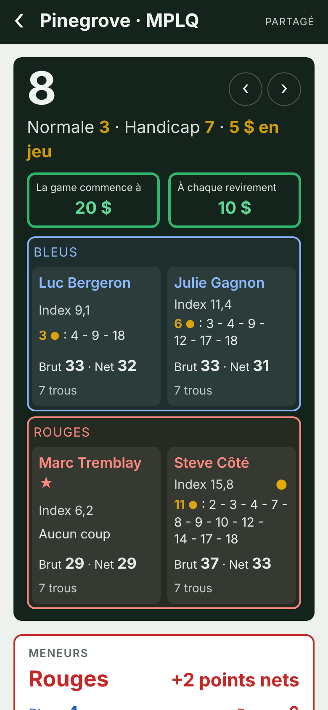
De l’invitation au 19e, en 10 trous
Touchez une étape pour voir comment ça marche.
Choisissez parmi les terrains du Québec déjà dans l’app ou un terrain virtuel de simulateur. Votre terrain n’y est pas ? Prenez la carte de pointage en photo : l’app lit les normales, les handicaps et les tertres.
Voir la section →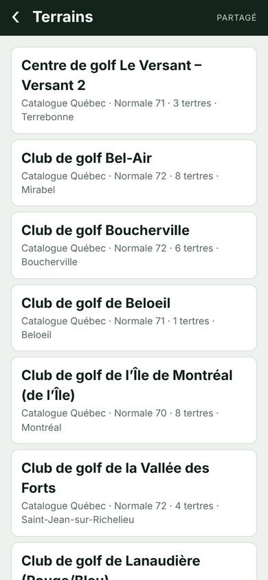
L’organisateur choisit le terrain, quelques dates et une date butoir. Tous les joueurs du groupe reçoivent un texto avec un lien pour répondre.
Voir la section →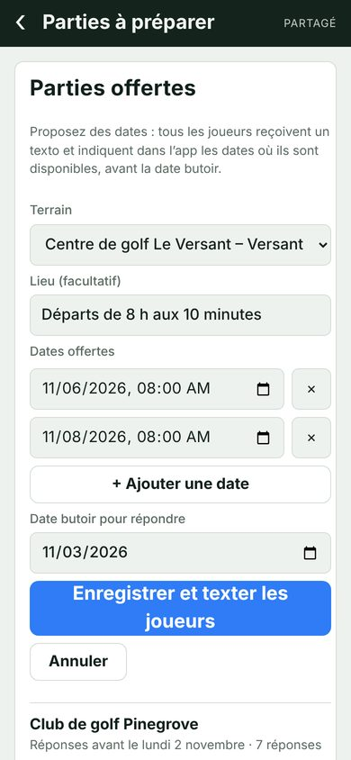
Chacun touche le lien et coche les dates où il est libre. L’organisateur voit qui est disponible pour chaque date, et combien de quatuors ça donne.
Voir la section →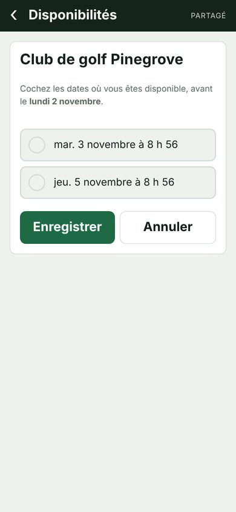
À la date butoir, l’app forme les groupes en variant les partenaires. Groupes de 3 permis quand le compte n’est pas rond. On peut aussi les faire à la main.
Voir la section →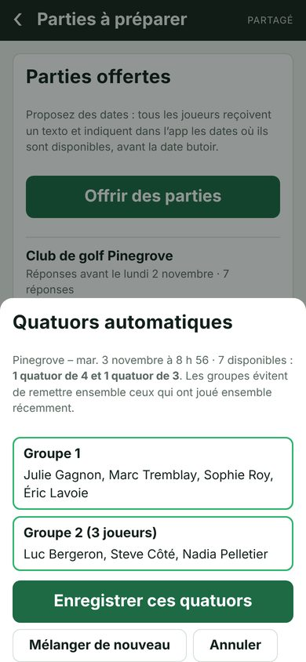
Le responsable crée la partie : joueurs, index, tertres, jeu et montants. L’app calcule le handicap de parcours et place les coups reçus sur les trous les plus difficiles.
Voir la section →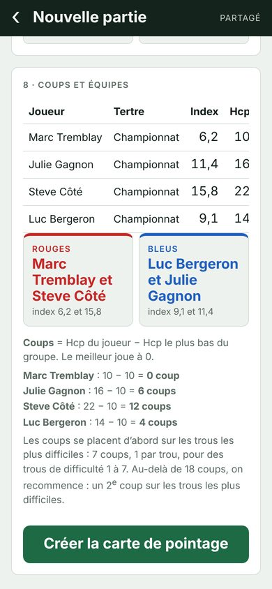
Le responsable entre les scores de chaque trou ; les autres suivent la partie en direct sur leur téléphone. Sans réseau sur le terrain ? Les scores sont gardés et envoyés au retour du signal.
Voir la section →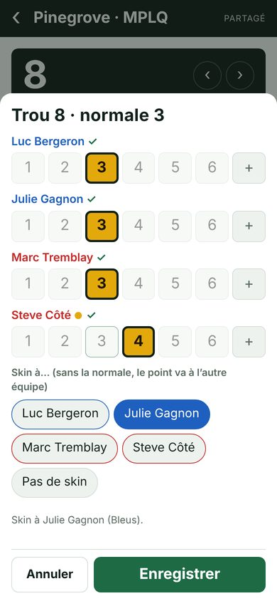
Chaque trou se compte selon votre jeu : la game à Pelland, le 9 points, Best Ball, Nassau, Wolf, Sixes, Skins ou votre propre jeu. Tout au net, avec les coups de chacun.
Voir la section →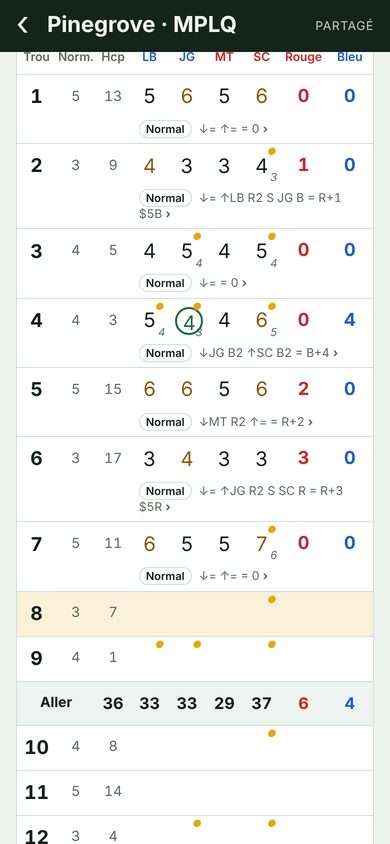
La skin va au joueur qui la gagne ; s’il ne fait pas la normale, le point va à l’autre équipe. Avec une press, elle compte double, avec un reroll, quatre fois.
Voir la section →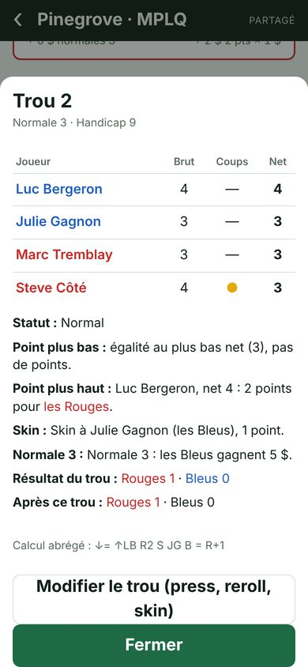
Chaque fois que l’équipe qui mène perd son avance (retour à égalité ou l’autre passe devant), la game monte du montant convenu. L’app les compte pour vous.
Voir la section →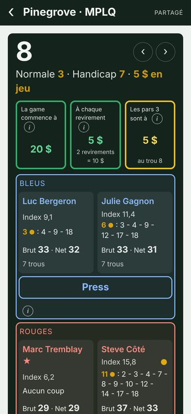
À la fin, l’app fait le compte : la game, les revirements, les points et les normales 3, par joueur. Chacun sait ce qu’il doit, sans calculatrice au 19e. L’app ne touche jamais à l’argent.
Voir la section →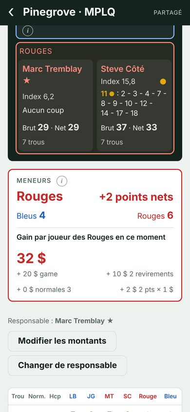
Moins de temps à organiser, plus de temps à jouer. Et des parties dont on reparle au 19e.
Une seule invitation, et tout le monde répond au même endroit. L’organisateur sait en un coup d’œil qui joue, quand et où.
Chacun dit quand il est libre avant la date butoir. Plus de joueur laissé de côté, plus de quatuor à trois à la dernière minute.
Les groupes changent d’une semaine à l’autre. La gang se mélange et les nouveaux s’intègrent vite.
Handicaps, points, skins, press : tout est compté pour vous, trou par trou. Plus de chicane sur la carte, plus de crayon perdu.
Chacun sait exactement ce qu’il doit ou ce qu’il gagne. On règle en deux minutes et on profite de la bière.
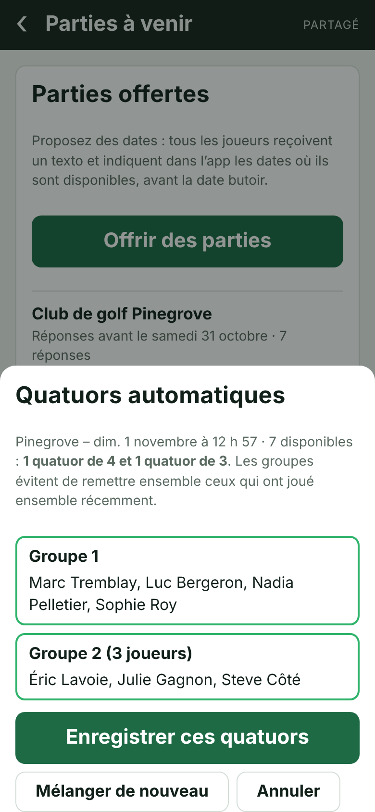
L’accueil de l’app suit la saison dans l’ordre : six étapes, de l’invitation au 19e trou, et quatre banques qui gardent tout ce que le groupe a bâti.
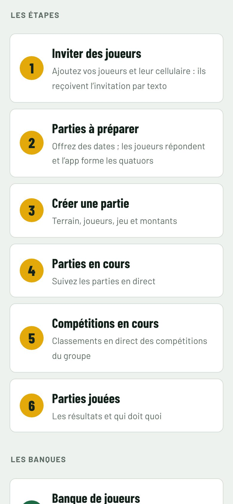
Choisissez le jeu en créant la partie. Tout se compte au net, avec les coups de handicap de chacun.
Toutes les règles en détail, avec exemples et calcul des mises →
À la fin, Fanion fait le compte : la mise de départ, les revirements, les points et les normales 3. Chacun sait ce qu’il doit, sans calculatrice au bar. L’app note les gageures ; elle ne touche jamais à l’argent.
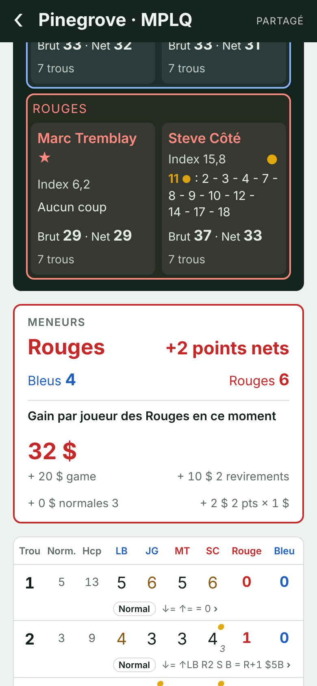
Le tournoi de fin de saison ou le membre-membre du club : créez les équipes, l’app calcule les handicaps, forme les classes et tient le classement en direct.
Équipes de 2 · 90 % du handicap
Chaque équipe affronte toutes celles de sa classe, en meilleure balle nette. Match gagné 1 point, nul ½.
Équipes de 2 · 85 % du handicap
Meilleure balle nette, en points : normale nette 2, oiselet 3, boguey 1. Le plus de points gagne.
Équipes de 2 · 85 % du handicap
Le plus bas total de la meilleure balle nette, par rapport à la normale.
Équipes de 2 à 4 · handicap d’équipe
Une seule balle par équipe, un minimum de départs par joueur, et le handicap d’équipe à 25-20-15-10 %.
Membre-invité, scramble à la Floride, coupe Ryder entre deux clans.
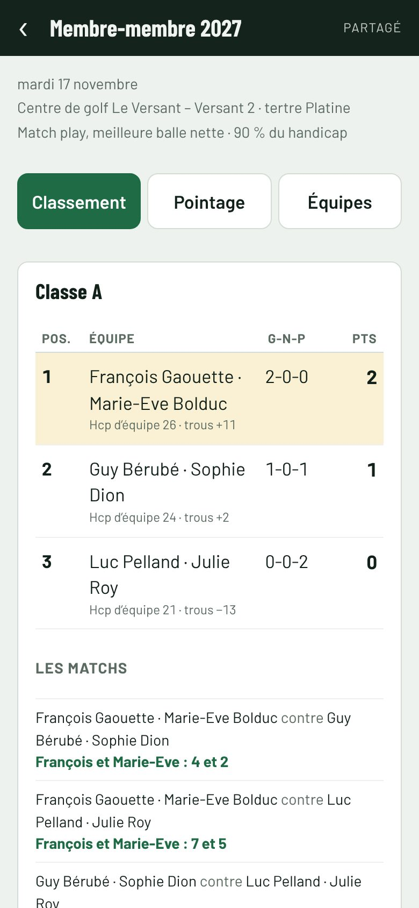
Un seul compte par golfeur, lié à son cellulaire, pour tous ses groupes. Dans chaque groupe, chacun a son rôle.
Il a créé le groupe et choisi le forfait. Il peut confier l’organisation à un autre joueur.
Il invite les joueurs, offre les dates, crée les parties et les compétitions. Souvent le propriétaire lui-même.
Il répond aux dates, suit les parties et les classements en direct, et voit qui doit quoi. Il joue, c’est tout.
La première fois qu’un invité entre dans le groupe, une étiquette de sac à son nom l’accueille et lui explique ce qu’il peut faire.
Les outils de l’organisateur restent visibles, mais grisés : un toucher montre un aperçu de ce qu’ils font. Personne ne se sent perdu, et l’envie d’organiser sa propre gang vient toute seule.
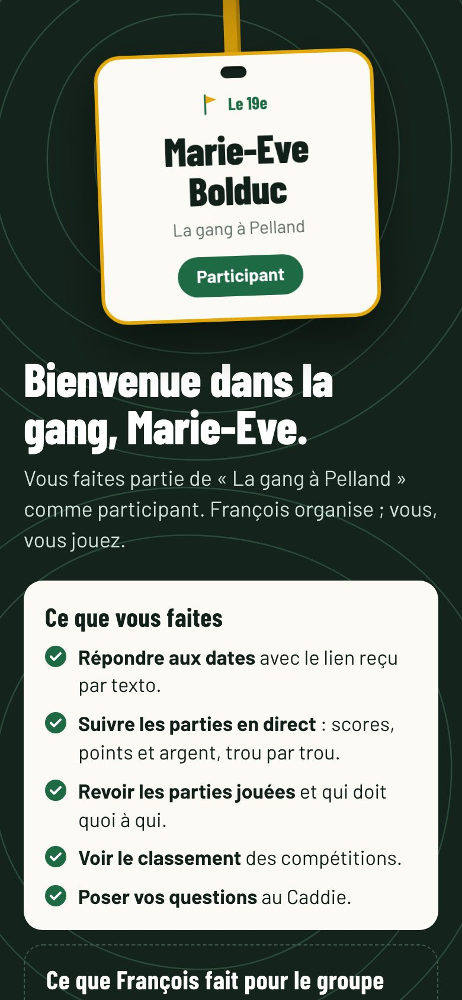
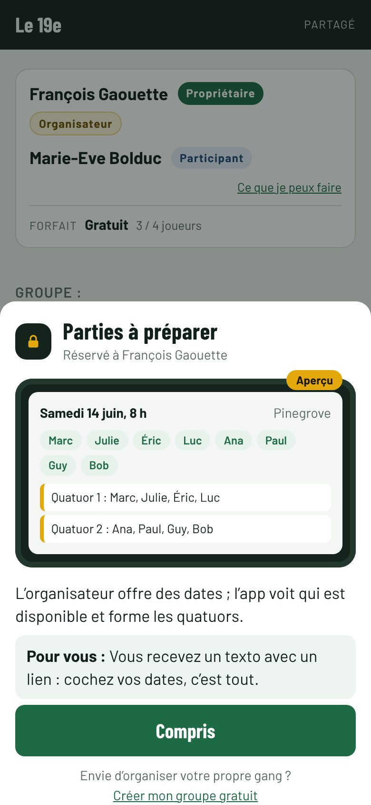
Des dates offertes, une partie qui commence, une compétition créée : le groupe est averti sur son téléphone, sans texto de plus.
Une question sur l’app, une règle ou un handicap d’équipe ? Le Caddie répond, en français, à toute heure.
Partagez votre lien : pour chaque groupe qui passe au forfait Groupe grâce à vous, votre prochaine saison est offerte.
Votre groupe joue tout l’hiver dans un centre de simulateurs ? Fanion suit.
Pas d’abonnement par joueur : l’organisateur paie une fois, et le groupe en profite toute la saison.
Pour essayer avec votre quatuor.
Prix fondateur pour les groupes inscrits avant le 31 mars 2027, garanti les saisons suivantes. Ensuite : 79 $.
Pour une gang qui joue toute la saison.
Pour une ligue de club ou de centre de simulateurs.
Plus de 64 joueurs, un club ou un centre de simulateurs ? Écrivez-nous.
Touchez « Se connecter » en haut de cette page, ou ouvrez l’app Fanion. Entrez votre cellulaire et votre mot de passe, puis choisissez votre groupe. Ajoutez-la ensuite à votre écran d’accueil pour la retrouver en un geste.
Non. Ouvrez le lien sur votre téléphone, puis ajoutez Fanion à votre écran d’accueil (sur iPhone : bouton Partager, puis « Sur l’écran d’accueil »). Elle s’ouvre ensuite comme une app.
Oui. Les scores entrés sans réseau sont gardés sur le téléphone et envoyés dès que le signal revient.
Seul le responsable de la partie entre les scores. Les autres suivent la partie en direct s’ils le veulent, et répondent aux dates offertes avec le lien reçu par texto.
La première fois, chacun crée son compte : il faut un cellulaire, on reçoit un code par texto, puis on choisit un mot de passe. Ensuite, on se connecte avec son cellulaire et son mot de passe, puis on choisit son groupe : le même compte donne accès à tous ses groupes.
Le propriétaire a créé le groupe et choisit le forfait. Il peut nommer un organisateur, parmi les joueurs qui ont accepté l’invitation. Le propriétaire et l’organisateur invitent les joueurs, offrent les dates, créent les parties et les compétitions. Les participants répondent aux dates, suivent les parties et les classements en direct, et voient d’un toucher à quoi servent les autres tuiles.
Non. Un seul compte, lié à votre cellulaire, donne accès à tous les groupes où vous êtes invité. Après la connexion, vous choisissez le groupe dans « Mon compte ».
Le membre-membre par équipes de 2 en match play, en Stableford ou en coups, et le Texas scramble par équipes de 2 à 4 avec départs minimums. Les handicaps d’équipe suivent le système mondial, les équipes sont réparties en classes, et le classement se met à jour à chaque score entré.
Activez les notifications dans l’app : vous êtes averti quand des dates sont offertes, qu’une partie commence ou se termine, ou qu’une compétition est créée. L’invitation au groupe, elle, part par texto du téléphone de l’organisateur.
Un assistant dans l’app qui répond à vos questions, en français : comment inviter un joueur, les règles d’un jeu, le calcul d’un handicap d’équipe, les forfaits. Il n’a pas accès à vos scores ni aux données de votre groupe.
L’organisateur paie 79 $ plus taxes par carte de crédit (49 $ au prix fondateur, avant le 31 mars 2027), sur une page de paiement sécurisée (Stripe). Il indique le nom de son groupe et reçoit un reçu par courriel. Le groupe passe à 16 joueurs dans les 24 heures.
Non. Vous payez une saison à la fois. Aucun montant n’est prélevé sans votre accord.
Vous avez 30 jours après l’achat pour demander un remboursement complet, sans justification. Écrivez à bonjour@fanion.ai.
Non. Fanion calcule qui doit quoi selon vos règles, mais ne touche jamais à l’argent. Vous réglez entre vous, comme d’habitude.
Les noms, numéros et parties de votre groupe ne sont visibles que par les membres du groupe. Consultez notre politique de confidentialité.